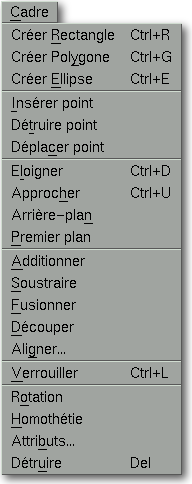

<!-- Documentation Xclamation (c)1994-2000 AXENE contact axene@axene.org>
<html>
<head>
<title>Menu Cadre</title>
</head>

<body BGCOLOR="#FFFFFF" BACKGROUND="Images/back.gif" TEXT="#000000">
<p ALIGN="right">


<p>
<br>
<br>
Le menu déroulant Cadre donne accès à tous les outils permettant
de créer et modifier les cadres. 
<br>
<br>
<hr>
<br>
<center>

<br>
<i><small>
Photo d'écran&nbsp;: Menu déroulant Cadre
</i></small>
</center><p>
<br>
<hr>
<br>
<p>
<h3>Le menu Cadre comporte les entrées suivantes&nbsp;:</h3>
<ul>
  <li><a NAME="create_rectangle_menu_entry">
     l'entrée <i>&quot;Créer
     Rectangle&quot;</i> permet de <b>créer un cadre de forme rectangulaire</b>.
     Elle agit de la même manière que le premier
     <a HREF="HBar_Frame.html#rectangle_icon">bouton icône</a>
     de la seconde section de la barre horizontale d'icônes 'Cadre'.
     </a><p>
  <li><a NAME="create_polygon_menu_entry">
     l'entrée <i>&quot;Créer
     Polygone&quot;</i> permet de <b>créer un cadre de forme polygonale</b>.
     Elle agit de la même manière que le second
     <a HREF="HBar_Frame.html#polygon_icon">bouton icône</a>
     de la seconde section de la barre horizontale d'icônes 'Cadre'.
     </a><p>
  <li><a NAME="create_ellipse_menu_entry">
     l'entrée <i>&quot;Créer Ellipse&quot;</i>
     permet de <b>créer un cadre de forme elliptique</b>.
     Elle agit de la même manière que le troisième
     <a HREF="HBar_Frame.html#ellipse_icon">bouton icône</a> 
     de la seconde section de la barre horizontale d'icônes 'Cadre'.
     </a><p>
  <li><a NAME="insert_vertex_menu_entry">
     l'entrée <i>&quot;Insérer point&quot;</i> 
     permet d'<b>ajouter des sommets</b> aux cadres sélectionnés.
     Elle agit de la même manière que le second
     <a HREF="HBar_Frame.html#add_vertex_icon">bouton icône</a> 
     de la quatrième section de la barre horizontale d'icônes 'Cadre'.
     </a><p>
  <li><a NAME="delete_vertex_menu_entry">
     l'entrée <i>&quot;Détruire point&quot;</i>
     permet de <b>détruite des sommets</b> aux cadres sélectionnés.
     Elle agit de la même manière que le troisième
     <a HREF="HBar_Frame.html#del_vertex_icon">bouton icône</a>
     de la quatrième section de la barre horizontale d'icônes 'Cadre'.
     </a><p>
  <li><a NAME="vertex_mode_menu_entry">
     l'entrée <i>&quot;Déplacer point&quot;</i>
     permet de passer Xclamation en <b>sélection de cadre mode sommets</b>.
     Elle agit de la même manière que le premier
     <a HREF="HBar_Frame.html#del_vertex_icon">bouton icône</a>
     de la quatrième section de la barre horizontale d'icônes 'Cadre'.
     </a><p>
  <li><a NAME="backward_menu_entry">
     l'entrée <i>&quot;Eloigner&quot;</i>
     permet d'<b>éloigner d'un plan</b> les cadres sélectionnés.
     Elle agit de la même manière que le quatrième 
     <a HREF="HBar_Frame.html#backward_icon">bouton icône</a> 
     de la cinquième section de la barre horizontale d'icônes 'Cadre'.
     </a><p>
  <li><a NAME="forward_menu_entry">
     l'entrée <i>&quot;Approcher&quot;</i>
     permet de <b>rapprocher d'un plan</b> les cadres sélectionnés.
     Elle agit de la même manière que le troisième 
     <a HREF="HBar_Frame.html#forward_icon">bouton icône</a>
     de la cinquième section de la barre horizontale d'icônes 'Cadre'.
     </a><p>
  <li><a NAME="background_menu_entry">
     l'entrée <i>&quot;Arrière-plan&quot;</i>
     permet de <b>passer en arrière-plan</b> les cadres sélectionnés.
     Elle agit de la même manière que le deuxième
     <a HREF="HBar_Frame.html#background_icon">bouton icône</a>
     de la cinquième section de la barre horizontale d'icônes 'Cadre'.
     </a><p>
  <li><a NAME="foreground_menu_entry">
     l'entrée <i>&quot;Premier plan&quot;</i> 
     permet de <b>passer en premier plan</b> les cadres
     sélectionnés. Elle agit de la même manière
     que le premier 
     <a HREF="HBar_Frame.html#foreground_icon">bouton icône</a>
     de la cinquième section de la barre horizontale d'icônes 'Cadre'.
     </a><p>
  <li><a NAME="add_frames_menu_entry">
     l'entrée <i>&quot;Additionner&quot;</i>
     permet de <b>fondre les cadres sélectionnés en additionnant
     leurs surfaces</b>. Elle agit de la même manière que le premier
     <a HREF="HBar_Frame.html#add_icon">bouton icône</a>
     de la troisième section de la barre horizontale d'icônes 'Cadre'.
     </a><p>
  <li><a NAME="substract_frames_menu_entry">
     l'entrée <i>&quot;Soustraire&quot;</i>
     permet de <b>fondre les cadres sélectionnés en soustrayant
     leurs surfaces</b>. Elle agit de la même manière que le second 
     <a HREF="HBar_Frame.html#substract_icon">bouton icône</a>
     de la troisième section de la barre horizontale d'icônes 'Cadre'.
     </a><p>
  <li><a NAME="fusion_frames_menu_entry">
     l'entrée <i>&quot;Fusionner&quot;</i>
     permet de <b>fusionner les cadres sélectionnés</b> par
     ajout des sommets. Elle agit de la même manière que
     le troisième <a HREF="HBar_Frame.html#fusion_icon">bouton icône</a>
     de la troisième section de la barre horizontale d'icônes 'Cadre'.
     </a><p>
  <li><a NAME="outline_frames_menu_entry">
     l'entrée <i>&quot;Découper&quot;</i>
     permet de <b>découper dans le cadre le plus en arrière-plan
     de la sélection les surfaces des autres cadres</b>. Elle agit
     de la même manière que le quatrième
     <a HREF="HBar_Frame.html#outline_icon">bouton icône</a>
     de la troisième section de la barre horizontale d'icônes 'Cadre'.
     </a><p>
  <li><a NAME="align_frames_menu_entry">
     l'entrée <i>&quot;Aligner...&quot;</i>
     permet d'<b>aligner les cadres</b> de la sélection. Elle appelle
     la boîte de dialogue '<a HREF="Box_Align.html">Alignement des cadres</a>'.
     </a><p>
  <li><a NAME="lock_menu_entry">
     l'entrée <i>&quot;Verrouiller&quot;</i>
     permet de <b>verrouiller les cadres</b> de la sélection afin de
     fixer de manière sécurisée leurs positions et formes.
     Elle agit de la même façon que le 
     <a HREF="HBar_Frame.html#lock_icon">bouton icône</a>
     de la sixième section de la barre horizontale d'icônes 'Cadre'.
     </a><p>
  <li><a NAME="rotation_menu_entry">
     l'entrée <i>&quot;Rotation&quot;</i>
     permet d'<b>appliquer une rotation</b> sur les cadres sélectionnés.
     Elle agit de la même manière que le second
     <a HREF="HBar_Frame.html#rotation_icon">bouton icône</a>
     de la première section de la barre horizontale d'icônes 'Cadre'.
     </a><p>
  <li><a NAME="scaling_menu_entry">
     l'entrée <i>&quot;Homothétie&quot;</i>
     permet d'<b>appliquer une homothétie</b> sur les cadres sélectionnés.
     Elle agit de la même manière que le troisième
     <a HREF="HBar_Frame.html#scaling_icon">bouton icône</a>
     de la première section de la barre horizontale d'icônes 'Cadre'.
     </a><p>
  <li><a NAME="attributes_menu_entry">
     l'entrée <i>&quot;Attributs...&quot;</i>
     permet de <b>changer les attributs des cadres</b> sélectionnés.
     Elle appelle la boîte de dialogue
     '<a HREF="Box_Frame_Attributes.html">Attributs des cadres</a>'.
     </a><p>
  <li><a NAME="destroy_menu_entry">
     l'entrée <i>&quot;Détruire&quot;</i>
     permet de <b>détruire les cadres sélectionnés et leur contenu</b>
     de façon définitive.
     </a><p>
</ul>
<br>
<hr>
<p ALIGN="right">
<p>
</body>
</html>


